M 2 (Destroying Array-I)
Lecture - 19
Disjoint Set Union - Module 2 (Destroying Array-I)
(Refer Slide Time 00:11)
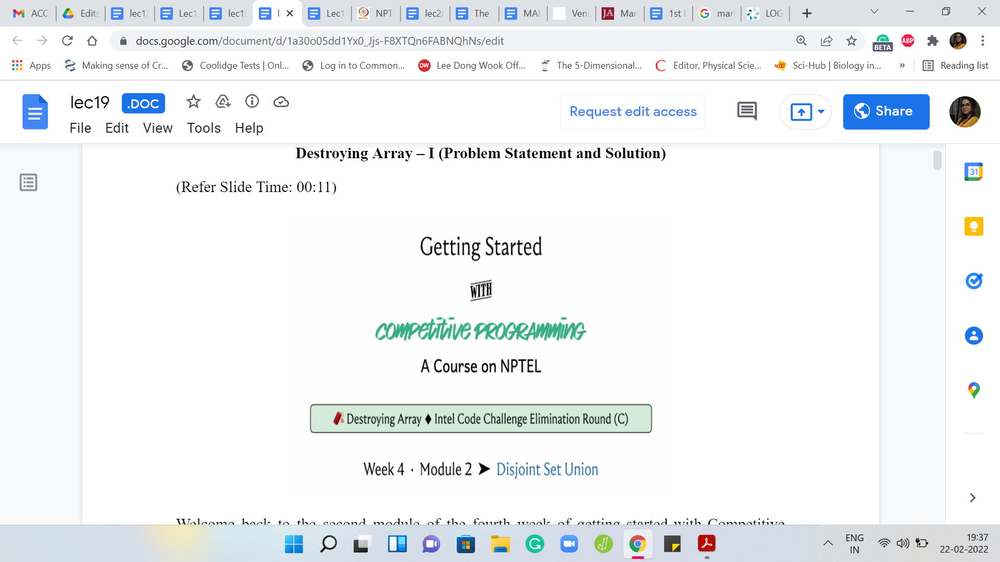
Welcome back to the second module of the fourth week of ‘Getting Started with Competitive Programming.’ As you know, this week, we are focusing on the ‘Disjoint Set Union’ data structure and its applications. In this module, I want to tell you about a problem called ‘Destroying Array,’ which is something you can again find on Codeforces. There is a link in the description as usual.
This was the third problem in an Intel Code challenge elimination round. It is rated at about 1600. Certainly, ‘disjoint sets’ are not the only way to approach this problem. In fact, I think even the official editorial gives a slightly different approach, which you can go and read up on if you are interested.
But the reason I chose this particular problem was that – First of all, it is not obvious that you could use disjoint sets. But there is a small trick, which if you use, then it becomes quite transparent how disjoint sets could be helpful. This is a trick that is, I think, more widely applicable. I thought this would be a cool problem to exemplify it. So with all that said, let us get started with the problem statement.
(Refer Slide Time: 01:18)
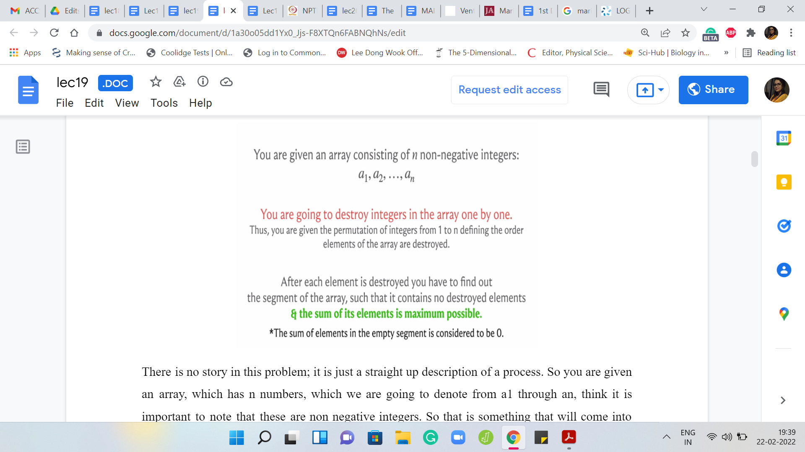
There is no story in this problem. It is just a straight-up description of a process. You are given an array, which has ‘n’ numbers, which we are going to denote from ‘a1’ through ‘an.’ I think it is important to note that these are non-negative integers. That is something that will come into play later. What is going to happen is that you are going to, as the name of the problem suggests, destroy the elements of this array one by one.
You are given a permutation of 1 to n, which tells you in what order you are going to destroy the integers of this array. We will probably make more explicit what this means through an example. Essentially, imagine that you are just deleting the elements according to this permutation, notice the one-based indexing.
For instance, if you had a1, a2, a3, and your permutation was three to one, then after the first step, your array would look like a1, a2. After the second step, it would look like a1, and at the third step, there is going to be nothing left. In general, once you are completely done, you have executed all the ‘n’ steps, your array has become completely empty. As I said, we will go through a more elaborate example in just a bit.
It will be one of the sample inputs that we will try to break down and observe closely. But let us figure out what is the task. What are we supposed to do with this information? At every stage what you are supposed to figure out is what is the largest surviving contiguous segment of elements that has the maximum possible sum.
So you can imagine that as you kill elements in the array, your array breaks down into contiguous chunks of integers. Each of these chunks is going to have a certain, let us call it weight, that is the sum of all the elements in that chunk. We want to figure out what is the heaviest junk that exists at every stage of this destructive process. Let us go through an example and I think all of this will become a little bit clearer.
(Refer Slide Time: 03:31)

For instance, let us say that here is the input array. That is denoted in black. All the black circles are the input array. The elements in red are the permutation of the sequence in which the destruction is supposed to happen. The elements in blue are just there for reference; That is the indices of the elements of the array. Remember, we are working with numbers ‘a1’ through ‘an.’ We have one-based indexing. This is just a reminder that that is the case.
Let us go through the process here. The first element that you are supposed to destroy is the fifth element and we know that that is the number 6. So that is gone.
(Refer Slide Time: 04:14)
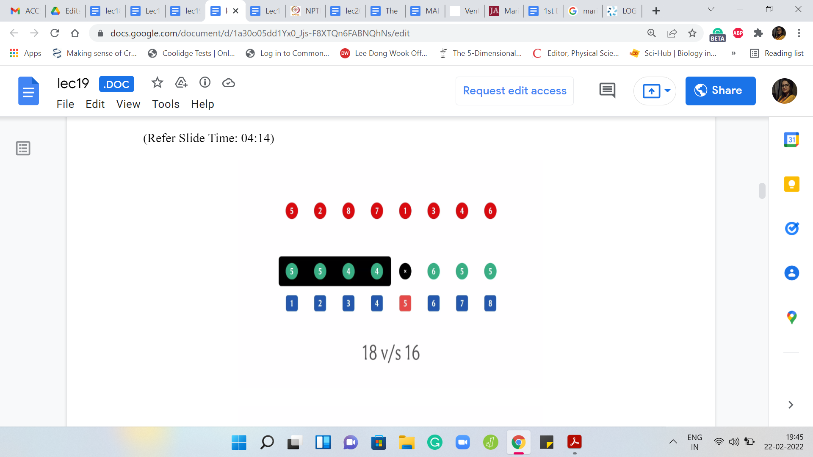 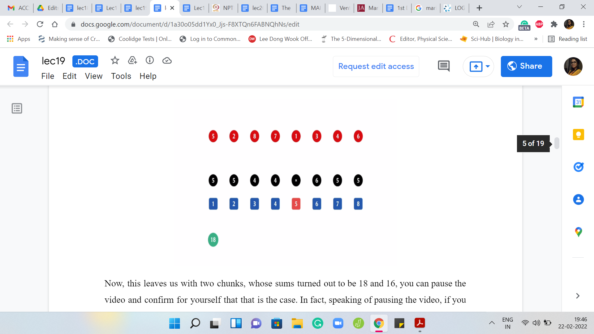
This leaves us with two chunks, whose sums turned out to be 18 and 16. You can pause the video and confirm for yourself that that is the case. In fact, speaking of pausing the video, if you want, you can pause the video and try to work through this whole example yourself once and then come back and exchange notes.
Feel free to do that now if you would like to. But in any case here you have two chunks. The first one adds up, I think, to 18 and the second one adds up to 16. The answer at this stage is going to be 18 because that is the heavier chunk.
(Refer Slide Time: 04:51)


In the second step, you are supposed to destroy the second element in the array. That is the second 5 there and now this breaks up into three chunks and the weights of these three chunks are 5, 8, and 16.
The new maximum is going to be 16. Notice that the maximum chunk, the heaviest chunk that we had in the previous step, got fragmented into two pieces. It is now no longer the ruling chunk and the correct answer at this point is going to be 16
(Refer Slide Time: 05:22)
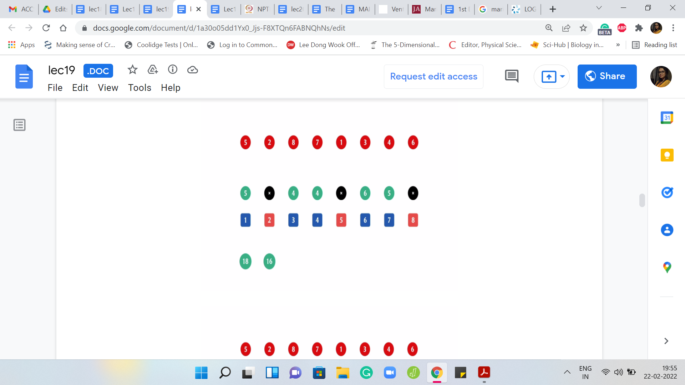 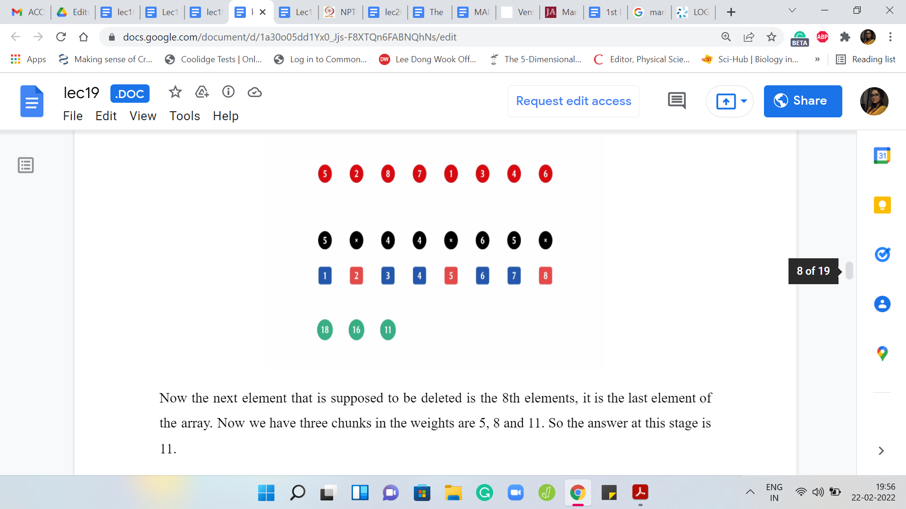
Now the next element that is supposed to be deleted is the 8th element. It is the last element of the array. We have three chunks in the weights are 5, 8, and 11. The answer at this stage is 11. The next element to be deleted is the 7th element, and we still have three chunks but the weights now are 5, 8, and 6. The answer at this stage is 8.
(Refer Slide Time: 05:33)
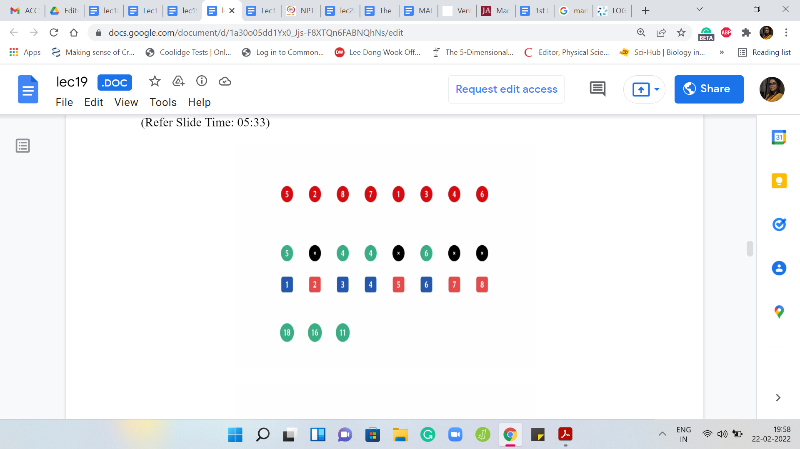 


The next element to be deleted is the first one that completely annihilates one of the chunks. We are left with two chunks now of weights 8 and 6. The answer actually does not change. The previous, the heaviest chunk from the previous step still dominates the situation. The answer is still 8. The next element to be deleted is the element at the third index.
(Refer Slide Time: 06:06)
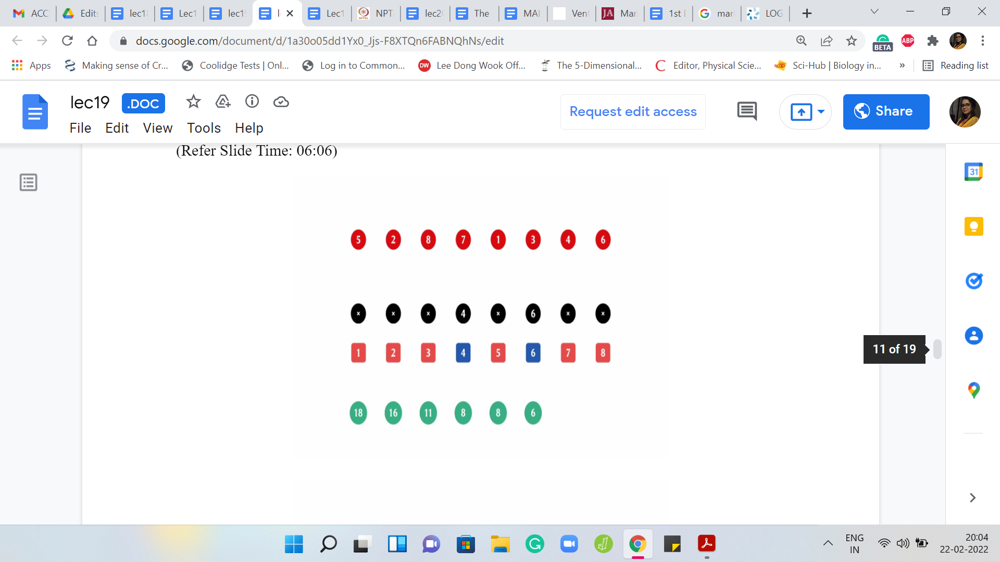 

That is the first four; That is gone. Now we have two chunks of weights 4 and 6. The answer at this point is 6. The next element to be deleted is the one at the fourth index. Now you are only left with one chunk. There are no comparisons to be made and it so happens that the answer actually did not change from the previous step and it remains 6.
(Refer Slide Time: 06:29)
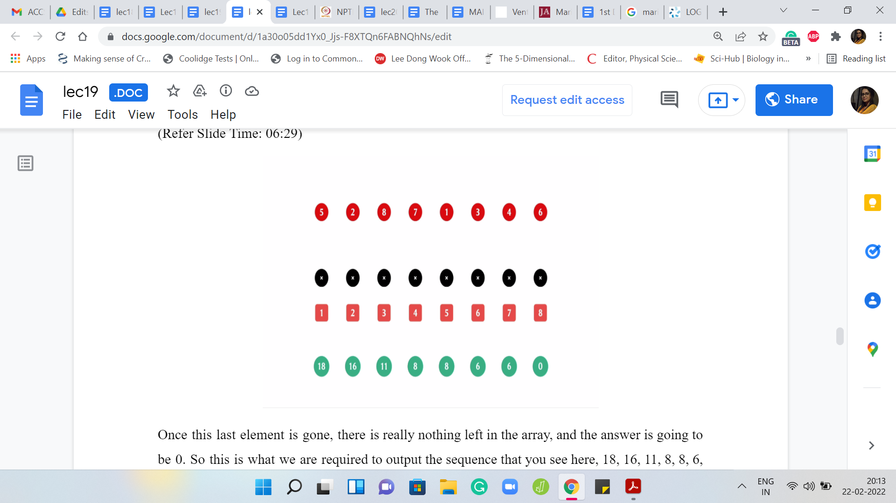
Once this last element is gone, there is really nothing left in the array, and the answer is going to be 0. This is what we are required to output – this sequence that you see here: 18, 16, 11, 8, 8, 6, 6, 0. We are supposed to output the sequence of numbers, one on each line. That is essentially the goal of the problem statement. I hope that the statement itself is clear at this point.
Again, you might want to pause and think about how would you approach this. A first cut solution is going to be to just simulate the process. But if you go and look at the limits, you will see that the array itself has 106 elements potentially. The numbers themselves range from 1 to 109, I believe.
If you work out how expensive it is going to be to simulate the whole process, you will see that that is actually not going to work out. You need something slightly cleverer. Also, I think when we were talking about disjoint set union, I also said that this is inherently a constructive process. You have the sets and you put them together. If you have a process that is instead of breaking things apart, then that is not perhaps so well suited for a disjoint set union.
I said this in the context of graphs. For instance, when we were trying to track connected components, we said that if you are bringing edges into the picture, then components are building up and gluing together. That is very naturally modeled by DSU. But instead, if you had edges also being deleted, then these breakages are harder to model. It feels less natural. We seem to have a similar situation here.
(Refer Slide Time: 08:11)
 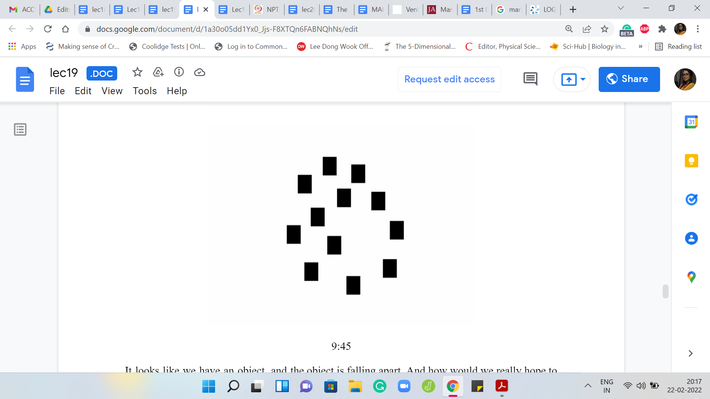
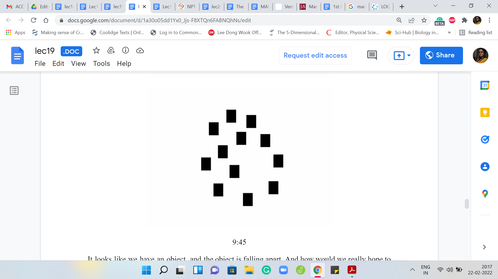
It looks like we have an object, and the object is falling apart. How would we really hope to use DSU in this sort of setting? Remember, I mentioned that there is one trick that makes it somewhat transparent as to how DSU could be relevant for us here. I am not sure if it is reasonable to ask you to guess what this trick might be. But a hint would be: Think about what happens when you play a video back in reverse.
Imagine that you go through this whole process. But in fact, you could perhaps pause the video here and see what happens if you were to play it back in reverse. To be honest, I have no idea what that would look or sound like, probably a bit weird. But a picture may emerge that might help you think about how DSU would be relevant to this problem. So take a moment here, think about this and come back when you are ready.
Let us follow through on the hint and see what happens if we actually run the process in reverse. Instead of removing things from the array one by one, what we will try and do is see if we can put things back into the array one by one, but in the opposite order of the destruction sequence that was given to us in the input. Now the visual is that instead of a process that breaks things apart, we have a process that puts things back together. At the very end, you have actually reconstructed your entire array.
(Refer Slide Time: 09:48)

Let us go back to the example and see what happens when we run the process in reverse order. By the way, you do not see any of the array elements here because we are going in reverse. At the very end, remember that the array became empty. Nothing is really available to us, to begin with. The last element to be deleted will now be the first one to come back into the picture.
The last element to be deleted was the one that was at the sixth index. That happened to be the number 6. Then the last but one element that was deleted, which is the next element that needs to be put back is the one that happens to be at the fourth index, and then the one at the third index, and then the one at the first index, and so on and so forth. I am going to build out the rest of it.
Hopefully, you can already see why this can be treated as an instance of disjoint sets. In a sense, the stuff that you are bringing back, either ends up being a singleton set, if it is in an isolated part of the array, or it ends up either extending the chunk, or it ends up merging two chunks. In some sense, that is how the introduction of a new element ends up adding to the landscape of the collection of sets that we have maintained so far.
At this point, you probably have enough of a picture of what is happening to think about whether you can build out a complete solution for yourself. If you would like to do that this would be a good time to pause, try it out, and then come back when you have given it a shot yourself. But in the meantime, let us continue our journey here. I think we stopped with restoring the element in the first position.
The next one to restore is the element at the seventh position. Notice that this is just extending a previous singleton element so that it is now a set of size 2, then when we put back the eighth element, this gets extended further and becomes a set of size 3, then when we put back the second element, it actually merges a singleton set with a set of size 2.
When we put back the last element, it is no surprise that the two chunks that we had essentially get merged into this one giant set, which consists of all the elements. At this point, we have completed our rundown of the entire process, but now in reverse order. Let us think about how we are going to use a disjoint set union to track the progress that we are making when we go in reverse. Let me highlight the main ideas that are involved here.
(Refer Slide Time: 12:29)

First, as we have been saying, we run the operations in reverse order. The next thing is that we use union operations to appropriately keep track of sets, which is to say that when a new element comes in, we have to figure out if it is isolated, or whether it is extending a previous chunk, or whether it is merging two chunks. These are the only three things that can happen.
If you maintain a state array, which tells you which elements are currently present in the array and which elements are not, it will help you make a distinction between these three scenarios. So in particular, if you add an element at the ‘i’th location, and both the ’i-1’ and the ’i+1’th locations are empty, there is nothing in there, then this newly added element is just going to be a singleton set.
For this situation, we will actually go ahead and add a makeSet operation to our UnionFind class, which is something that we did not do in the previous video. But in this situation, it just makes things convenient to be able to create singleton elements as and when they appear. The other situations could be that you have an element being added at the ’i’th location, and exactly one of its neighboring slots is occupied and the other one is empty.
So either ‘i-1’ is empty and ‘i+1’ is occupied, or the other way around. In both of these cases, we need to execute one union operation to account for the fact that one of the older sets is now getting enhanced with one new element. The final scenario that could arise is that both neighboring locations are occupied from before. So both the ‘i-1’ and the ’i+1’th locations are non-empty.
In this case, the introduction of the element at the ‘i’th location is going to actually merge two sets from before. To account for this, we will have to do two union operations, one for ’i’ and ‘i-1’ and then ‘i’ and ‘i+1.’ This will have the desired effect of capturing the full merge. That is actually all the cases but if you want to run off and code this up right now then just be a little bit careful about accounting for the corner cases properly.
If you are at the extreme ends of the array, then watch out in terms of probing the ‘i-1’ or the ’i+1’th locations, which may not exist depending on where you are in the array. So after counting carefully for these edge cases, I think you should be in a good place in terms of capturing all the actions that happened. But remember, you still need to output the value of the heaviest chunk.
For this, you need to do some extra book-keeping. You need to keep track of the sums of these sets as well. Remember, previously, we have done things like tracking the sizes of the sets and the maximum elements, and the minimum elements. This is just a different quantity to keep track of. We will introduce an extra array, which helps us track the sums of the sets, the sum of the elements in any of these sets.
Remember that this needs to be properly updated when you execute the union operation. When you have, let us say, x pointing to y, what do you want to do is that the sum set value of y should be incremented with the sum set value of x. That is something that you do need to put on the record. With this, I think you probably have enough hands to go ahead and implement this yourself.
Feel free to use the DSU class code from the previous module as a starter file and kind of build on it based on what we have discussed so far. You could come back and exchange notes with the implementation that we will discuss separately in the implementation video. I will see you there and that will be all for now. Thanks for watching, have fun implementing this, and do let us know how it goes!